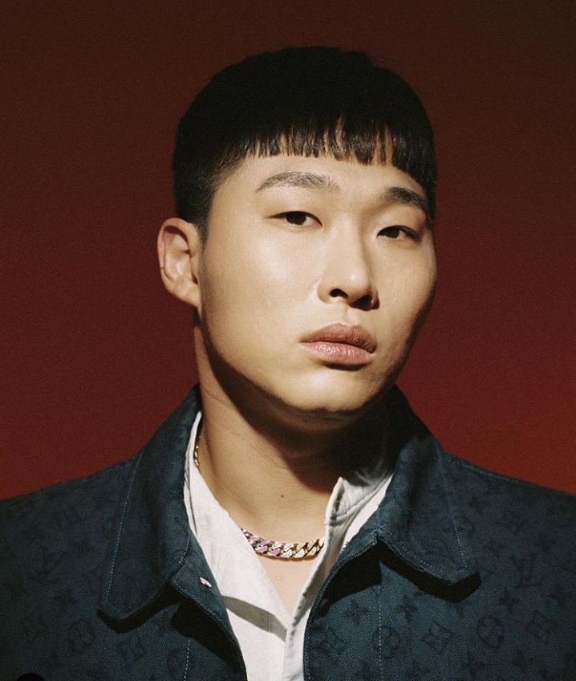

스윙스, 대한민국의 래퍼
대한민국의 래퍼이자 자영업자. IMJMWDP 소속 아티스트이자 설립자이며[18] 자영업자로서는 헬스장, 카페를 운영 중이다.[
오버그라운드에선 루이와 함께 긱스로 활동. 데뷔와 함께 음원차트를 석권하며 대단한 인기를 끌었다. 2012년에는 믹스테잎 Good Time을 발표했다. [12] 쇼미더머니4에 출연한 후 귀염상과 걸맞지 않는 출중한 실력 덕분에 꽤 많은 팬층이 형성되었으며 트위터와 인스타그램을 통해 이를 실감할 수 있다. 2019년 3월 31일 그랜드라인을 탈퇴한 뒤 테이크원, DJ Dopsh와 함께 하프타임 레코즈를 설립했다. 다음날 테이크원과 정식으로 팀을 이뤄 정규앨범 [Good Time For The Team]을 발매했다. 2020년, 쇼미더머니 9에 출연하였고 머쉬베놈과 약 1000만원여 격차를 벌리며 최종 우승했다.
거기에 쇼미8 논란이 겹쳐 2019년은 전체적으로 스윙스에게 최악의 해였으나 2020년 발매한 Upgrade IV 앨범으로 죽지 않았다는 것을 과시했다. 대부분의 리스너들이 Upgrade II 급의 수작으로 본다. 피자집과 CEO직을 내려놓은 걸 이제야 이해하게 됐다.